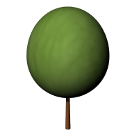
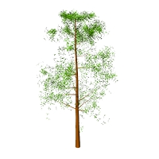

laBaseDatosPlantas
Icono:
Barra de herramientas: Herramientas de Lands

Menú:
Lands Design incluye una amplísima base de datos de plantas, basada en Visualplant, que servirá al profesional paisajista no sólo para insertar especies de plantas en el dibujo. También le resultará de gran utilidad como herramienta de referencia y consulta e impresión de los datos botánicos de las distintas especies.
El cuadro diálogo de la Base de datos de plantas se divide en las siguientes áreas:

Cuadro de diálogo Base de datos de plantas.

Barra de herramientas en el diálogo Base de datos de plantas.
Nueva especie: abre un diálogo de Propiedades de la especie de planta vacío para rellenarlo con los nuevos parámetros y características de las nuevas especies de vegetación.
Eliminar especie: elimina una especie de planta seleccionada de la lista.
Propiedades: abre el diálogo de propiedades de especies de plantas de la especies de planta seleccionada.
Previsualizar ficha: abre una ventana de Internet que muestra la información de las especies de plantas seleccionadas.
Imágenes de Google: permite una búsqueda en Google de las especies de plantas seleccionadas y muestra las imágenes encontradas en el área de visualización gráfica, para reemplazar las imágenes e ilustraciones existentes. Se requiere una cexión a Internet para activar esta opción. Las imágenes descargadas se almacenan automáticamente en una carpeta denoninada "Google Plant Images", disponible en los archivos públicos de Windows: (C:\Usuarios\Acceso público\Documentos públicos\Lands).

Área de filtros de la base de datos de plantas.
Esta área muestra diferentes opciones para filtrar una búsqueda de especies de plantas:
 , las especies de plantas que tienen un archivo de renderizado específico (.arPlantX) asignado y Todas las especies de plantas.
, las especies de plantas que tienen un archivo de renderizado específico (.arPlantX) asignado y Todas las especies de plantas.
Al lado del desplegable con los grupos hay una caja de texto de búsqueda. Se usará el texto escrito en esta caja para filtrar las plantas de manera que solo se muestren aquellas cuyo nombre o nombre común contenga la cadena de texto escrita.
La casilla de verificación "Filtrar" activa la búsqueda de especies de plantas por su Morfología y Características.
Mapa del mundo y lista con diferentes zonas climáticas diferenciadas por color. Este parte del área de filtros se puede ocultar en la búsqueda con un botón que se puede contraer.

Listado de especies de plantas en la base de datos de plantas.
Esta área muestra la lista de especies de plantas según la búsqueda. La lista se puede ordenar alfabéticamente o numéricamente haciendo clic en el correspondiente título de categoría:
Favorito No favorito
No favorito
Área de representación gráfica en la Base de datos de plantas.
Esta área se divide en dos partes:

Cuadro de diálogo Especies de plantas, ficha Especie.
El cuadro de diálogo de propiedades de Especie de plantas muestra toda la información de cada especie de planta, dividida en diferentes fichas:
Esta ficha muestra la información básica de las especies de plantas: origen, familia, zonas climáticas, requisitos, usos y comentarios.
En cada especie de planta se puede especificar la siguiente información:
En cada especie de planta se puede especificar la siguiente información:
Esta ficha muestra las diferentes representaciones en 2D y 3D de los dibujos en 2D de especies de plantas, forma 3D conceptual y forma 3D detallada.

|

|

|
| Dibujo de copa 2D | Forma conceptual 3D | Forma detallada 3D |
Esta ficha muestra el archivo de planta renderizado (archivo .ArPlantX) asignado a esta especie de planta. Haga clic en el botón Cambiar para buscar un nuevo archivo .ArPlantX en la librería de Lands Design, o haga clic en el botón Editor de plantas para abrirlo y modificar el archivo de planta de nXt actual.

Cuadro de diálogo de propiedades de Especies de plantas, ficha Render.